[食記] 阿嬤A灶腳@捷運大坪林站
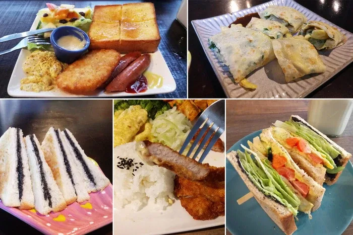
給忙碌人的總評：
有一點排煙問題，周末客滿時滿吵的。
略貴於一般早餐店的價位，媲美文青早午餐點的內容與品質。
餐點是感覺得到用心的，100-150元的預算可以吃飽飽。
阿嬤A灶咖從建國路上的二十張路進去，左轉自立街
事實上距離捷運大坪林站需走路約10分鐘，不算近。
顧客組成：
兩人座通常是情侶朋友、或獨自一人；
四人座通常是三人以上的親子。
中餐時段親子組好像較多，
不過可能因為是暑假期間也可能是這陣子才開始賣午餐。
空間氛圍：
位於住宅巷弄內，招牌不甚明顯，
聽得見汽機車聲但車流量並不大。(機車為主)
以住家庭院搭鐵皮(改成用餐空間)+住家房間(改成廚房)組成，
（其實有提供住家廁所使用，但會穿過人家客廳覺得頗不好意思XD）
似乎很近期才重新裝潢，
空間為復古文青路線，昏暗黃光，座位數約25位，
兩人座及四人座數量平均，亦有面街吧檯。
平日內用人並不多（好像是廢話），
周末大概九分滿，需要等十分鐘就會有座位那種感覺。
客滿時滿吵的(音樂+聊天聲)，有一些油煙味。
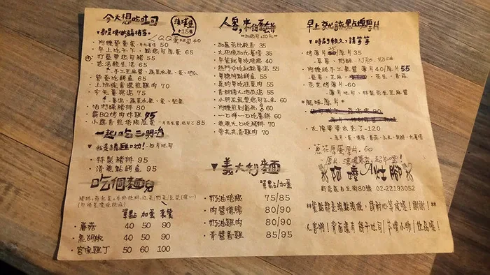
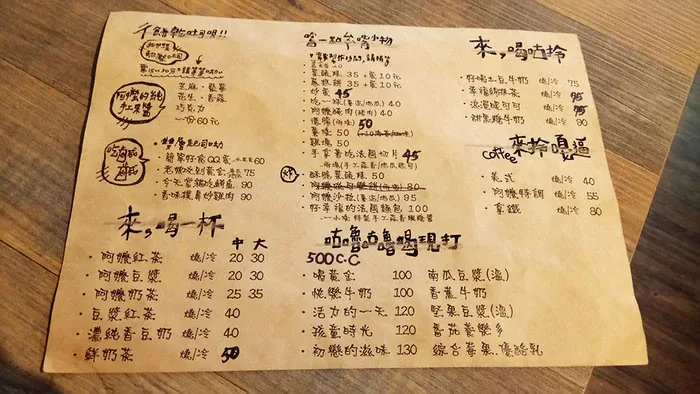
兩面菜單，每日似乎都會有一種優惠套餐。
餐點服務：
餐點類型屬於一般早餐店（土司、漢堡、蛋餅等），
不過亦有推出文青早午餐的套餐型。（白盤子裝著沙拉吐司香腸等）
價位介於普通早餐店與文青早餐店之間，
比較像稍微高級跟餐點有特色一點的早餐店，
食材少見一般早餐店如地瓜、九層塔、現打果汁。
餐點一般略貴10-20元，不過也反映在品質上，
如手做果醬、使用五穀土司、自醃肉品等。
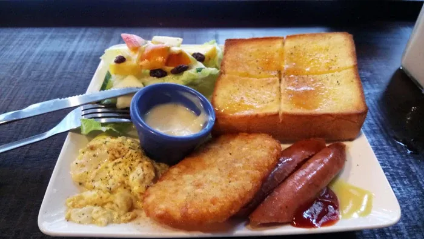
我記得這個是套餐，約130元左右？
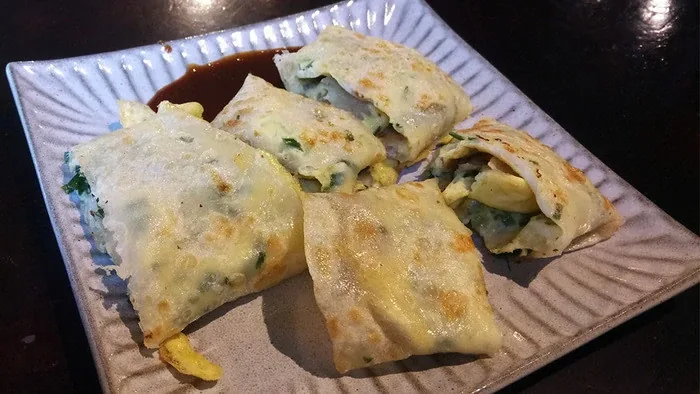
九層塔蛋餅（35元），好吃但普通。
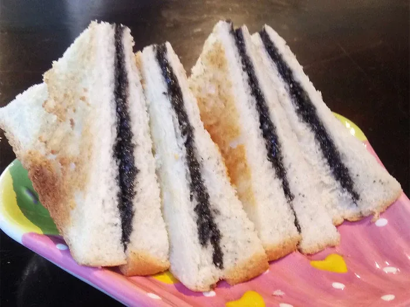
40元，芝麻薄片，有點乾。
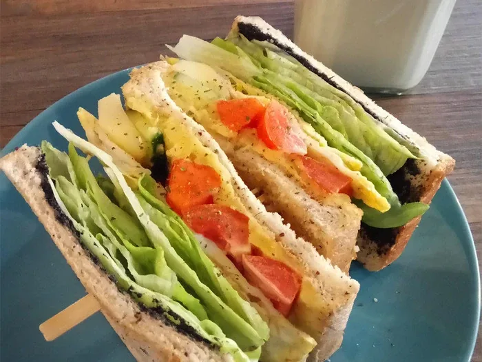
吐司 - 悠活輕生活（65元）
順序是芝麻醬、生菜、煎蛋、水果、地瓜泥。中間的水果夾層有蘋果、木瓜跟番茄，所以吃的時候會有層次感，很推薦。
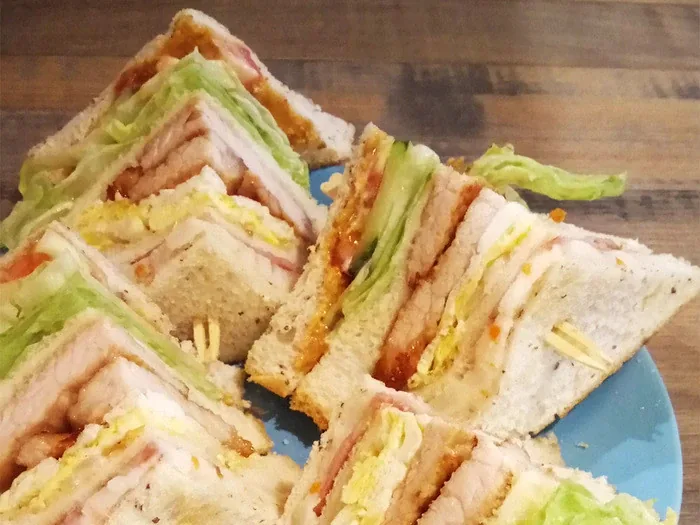
豬排總匯（95元），圖看起來可能還好但分量滿大的喔。
四片吐司、花生醬、番茄、小黃瓜、生菜、豬排、煎蛋、馬鈴薯泥。豬排有兩片但並不大，不過是好吃的。
早餐外提供的午餐，菜色不固定，通常約3-4種主菜。
150元上下的簡餐，味道很居家（是好吃的），都會有附湯，每次都不一樣。
似乎會使用小農的有機菜（不確定是否每次都如此）
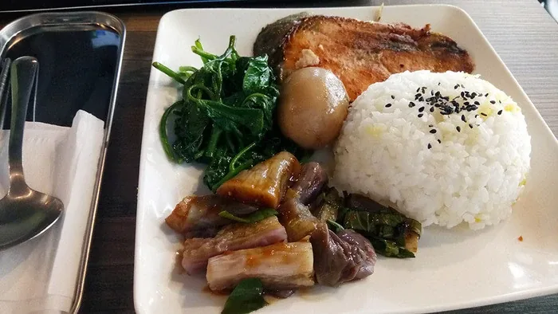
170元，主食是鮭魚，但我覺得部位吃起來沒有很好吃@@另外這次飯有一些鍋巴，滿失敗的。
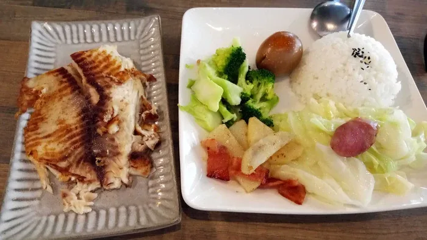
170元，主食是鯛魚，雖然看起來煎得有點破但是是好吃的。
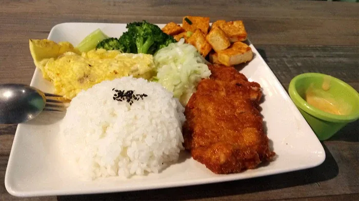
160元，主食是炸豬排，搭配自己做的桔醬，很香。但我覺得炸豬排還好 哈哈
阿嬤A灶腳
地址：新北市新店區自立街80號
營業時間：07:00-14:00
電話：02-2219-3052